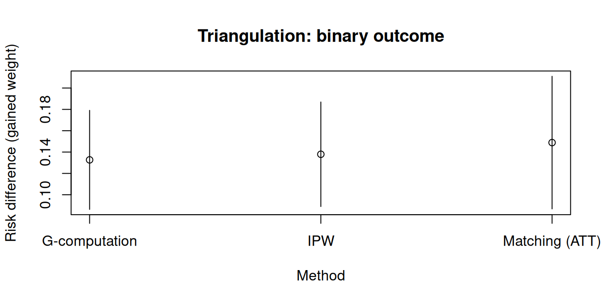
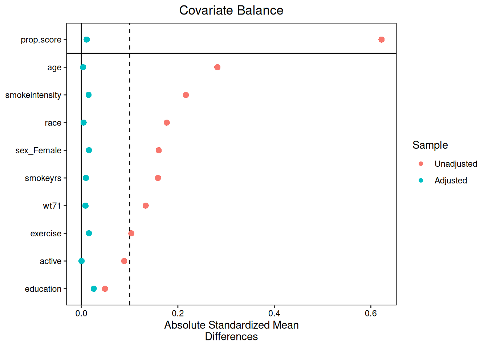

library(causatr)
library(tinyplot)
data("nhefs")
nhefs_complete <- nhefs[complete.cases(nhefs), ]
nhefs_complete$gained_weight <- as.integer(nhefs_complete$wt82_71 > 0)
nhefs_complete$sex <- factor(nhefs_complete$sex, levels = 0:1, labels = c("Male", "Female"))
confounders <- ~ sex + age + I(age^2) + race + factor(education) +
smokeintensity + I(smokeintensity^2) + smokeyrs + I(smokeyrs^2) +
factor(exercise) + factor(active) + wt71 + I(wt71^2)Methodological triangulation: g-computation, IPW, and matching
When multiple estimation methods agree on the same causal effect, we gain confidence that the result is not an artefact of a single modelling assumption. This vignette compares all three methods on the NHEFS dataset.
Setup
Continuous outcome: weight change
Fitting all three methods
fit_gc <- causat(nhefs, outcome = "wt82_71", treatment = "qsmk",
confounders = confounders, censoring = "censored")
fit_ipw <- causat(nhefs_complete, outcome = "wt82_71", treatment = "qsmk",
confounders = confounders, method = "ipw")
fit_m <- causat(nhefs_complete, outcome = "wt82_71", treatment = "qsmk",
confounders = confounders, method = "matching", estimand = "ATT")Contrasts
ivs <- list(quit = static(1), continue = static(0))
res_gc <- contrast(fit_gc, ivs, reference = "continue")
#> Warning: 117 row(s) with NA predictions excluded from the target population.
res_ipw <- contrast(fit_ipw, ivs, reference = "continue")
res_m <- contrast(fit_m, ivs, reference = "continue")
results <- rbind(
cbind(method = "G-computation", res_gc$contrasts),
cbind(method = "IPW", res_ipw$contrasts),
cbind(method = "Matching (ATT)", res_m$contrasts)
)
results
#> method comparison estimate se ci_lower ci_upper
#> <char> <char> <num> <num> <num> <num>
#> 1: G-computation quit vs continue 3.462484 0.4677686 2.545674 4.379294
#> 2: IPW quit vs continue 3.499174 0.4902045 2.538391 4.459958
#> 3: Matching (ATT) quit vs continue 3.341010 0.5586286 2.246118 4.435902Forest plot
tinyplot(
estimate ~ method,
data = results,
type = "pointrange",
ymin = results$ci_lower,
ymax = results$ci_upper,
xlab = "Method",
ylab = "ATE: weight change (kg)",
main = "Triangulation: continuous outcome"
)
abline(h = 0, lty = 2, col = "grey40")
Binary outcome: gained weight
fit_gc_bin <- causat(nhefs_complete, outcome = "gained_weight",
treatment = "qsmk", confounders = confounders, family = "binomial")
fit_ipw_bin <- causat(nhefs_complete, outcome = "gained_weight",
treatment = "qsmk", confounders = confounders, method = "ipw")
fit_m_bin <- causat(nhefs_complete, outcome = "gained_weight",
treatment = "qsmk", confounders = confounders,
method = "matching", estimand = "ATT")
res_gc_bin <- contrast(fit_gc_bin, ivs, reference = "continue")
res_ipw_bin <- contrast(fit_ipw_bin, ivs, reference = "continue")
res_m_bin <- contrast(fit_m_bin, ivs, reference = "continue")
results_bin <- rbind(
cbind(method = "G-computation", res_gc_bin$contrasts),
cbind(method = "IPW", res_ipw_bin$contrasts),
cbind(method = "Matching (ATT)", res_m_bin$contrasts)
)
results_bin
#> method comparison estimate se ci_lower ci_upper
#> <char> <char> <num> <num> <num> <num>
#> 1: G-computation quit vs continue 0.1326922 0.02366249 0.08631463 0.1790699
#> 2: IPW quit vs continue 0.1379464 0.02498002 0.08898648 0.1869064
#> 3: Matching (ATT) quit vs continue 0.1488834 0.03168677 0.08677844 0.2109883tinyplot(
estimate ~ method,
data = results_bin,
type = "pointrange",
ymin = results_bin$ci_lower,
ymax = results_bin$ci_upper,
xlab = "Method",
ylab = "Risk difference (gained weight)",
main = "Triangulation: binary outcome"
)
abline(h = 0, lty = 2, col = "grey40")
Diagnostics
Before interpreting results, check that the assumptions hold. diagnose() provides positivity checks, covariate balance, and method-specific summaries.
diag_ipw <- diagnose(fit_ipw)
diag_m <- diagnose(fit_m)IPW balance
plot(diag_ipw)
Matching balance
plot(diag_m)
When to use which method
| Criterion | G-computation | IPW | Matching |
|---|---|---|---|
| Model specification | Outcome model | Treatment model | Treatment model |
| Non-static interventions | Yes | No | No |
| Continuous treatment | Yes | Limited | Limited |
| Variance estimation | Sandwich or bootstrap | M-estimation sandwich | Cluster-robust sandwich |
| Robustness to | Treatment model misspecification | Outcome model misspecification | Outcome model misspecification |
When the outcome model and treatment model are both correctly specified, all three methods should produce similar estimates. Disagreement suggests model misspecification — investigate further.
References
Hernán MA, Robins JM (2025). Causal Inference: What If. Chapman & Hall/CRC.